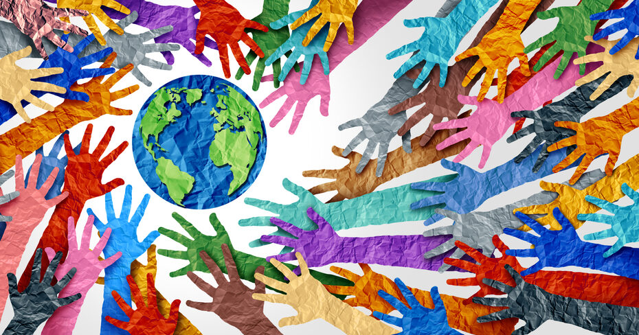
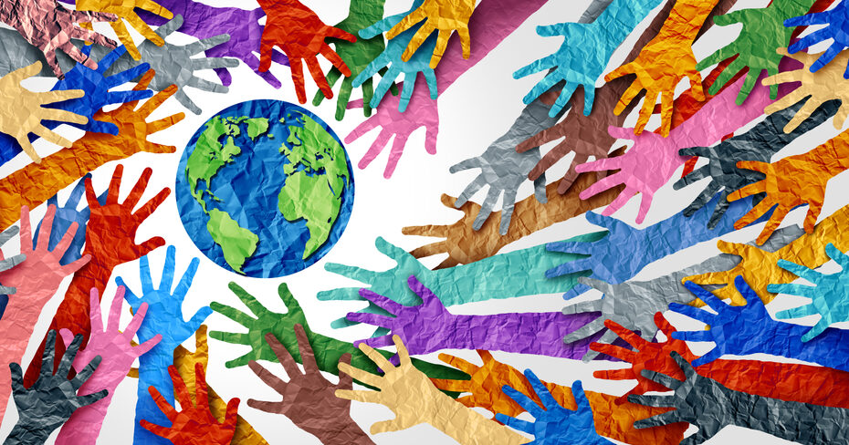

.png)
*🌷Tugas Kolaborasi PPKn-IPS-TIKËšà§â‹†ï½¡Ëš ⋆
Discover, Explore, and Collaborate with Style!
Discover, Explore, and Collaborate with Style!
Relevansi: Salah satu masalah utama dalam pencapaian SDG 3 di Indonesia adalah ketidakmerataan akses layanan kesehatan, terutama di daerah-daerah terpencil. Peningkatan infrastruktur kesehatan akan membantu mengurangi angka kematian ibu dan anak serta meningkatkan kualitas pelayanan kesehatan di daerah yang kurang terlayani.
Saran: Pemerintah Indonesia harus bekerja sama dengan negara-negara seperti Jepang dan Aljazair yang memiliki pengalaman dalam mengembangkan infrastruktur kesehatan. Investasi dalam pembangunan fasilitas kesehatan di daerah terpencil dan peningkatan teknologi medis seperti telemedicine bisa memperluas akses layanan.
Keterlaksanaan: Melalui kerja sama bilateral dan bantuan dari lembaga internasional, seperti WHO dan Bank Dunia, proyek pembangunan ini dapat direalisasikan dengan pendanaan yang cukup. Penguatan kapasitas tenaga medis lokal dan pelatihan berkelanjutan akan membantu menjamin layanan yang lebih baik di masa depan.

 



Relevansi: Kekurangan tenaga medis terampil di daerah-daerah tertentu menjadi tantangan dalam mencapai SDG 3. Peningkatan kualitas pelatihan dan pendidikan tenaga medis sangat penting untuk memperbaiki akses dan kualitas layanan kesehatan.
Saran: Program pelatihan bersama yang melibatkan negara-negara maju seperti Jepang dapat diperluas untuk memberikan pengetahuan dan keterampilan bagi tenaga medis di Indonesia. Penyediaan kursus dan pelatihan berjangka serta program magang di luar negeri bisa menjadi bagian dari upaya ini.
Keterlaksanaan: Dengan dana bantuan dari negara maju dan organisasi internasional, program ini dapat diimplementasikan secara berkelanjutan. Selain itu, pemanfaatan platform digital untuk pendidikan jarak jauh bisa mempercepat distribusi pengetahuan ke berbagai daerah.
Relevansi: Angka kematian akibat penyakit menular di Indonesia dan akses yang tidak merata terhadap vaksinasi menjadi isu yang signifikan. Program vaksinasi yang lebih luas dan upaya pencegahan penyakit menular dapat membantu menurunkan angka kematian dan meningkatkan kesejahteraan.
Saran: Kerja sama internasional dalam program vaksinasi, seperti yang dilakukan oleh COVAX, perlu diperluas agar negara-negara dengan pendapatan rendah dan menengah dapat mengakses vaksin dengan biaya terjangkau. Upaya penguatan sistem distribusi vaksin dan pendidikan masyarakat tentang pentingnya vaksinasi juga harus dilakukan.
Keterlaksanaan: Dengan dukungan dana dari lembaga seperti UNICEF dan WHO, serta kolaborasi dengan sektor swasta, program ini dapat dilaksanakan secara efektif. Perluasan infrastruktur distribusi dan penyuluhan melalui kampanye media sosial dan media lokal akan mendukung program vaksinasi.
Relevansi: Polusi udara, air, dan tanah adalah faktor signifikan yang mempengaruhi kesehatan masyarakat di seluruh dunia, termasuk di Indonesia. Polusi yang tinggi dapat memperburuk kondisi kesehatan, terutama bagi kelompok rentan seperti anak-anak dan lansia.
Saran: Inisiatif untuk mengurangi polusi, seperti promosi penggunaan energi terbarukan, pengelolaan limbah yang efisien, serta kebijakan pengendalian emisi, harus diimplementasikan. Kolaborasi antara negara-negara dengan teknologi ramah lingkungan dan penguatan peraturan global akan memperbaiki kualitas lingkungan.
Keterlaksanaan: Pemerintah Indonesia dapat bekerja sama dengan negara-negara seperti Swedia dan Jerman yang memiliki teknologi hijau, serta mendukung program-program dari UNEP (Program Lingkungan PBB). Pendanaan dapat berasal dari hibah internasional serta investasi publik-swasta untuk pembangunan infrastruktur ramah lingkungan.
Relevansi: Partisipasi masyarakat dan kesadaran publik sangat penting dalam pencapaian SDG 3. Program pendidikan kesehatan yang lebih luas dapat membantu masyarakat memahami pentingnya hidup sehat dan mengakses layanan kesehatan dengan benar.
Saran: Kampanye edukasi kesehatan, penyuluhan tentang pencegahan penyakit, serta pengembangan platform komunikasi yang melibatkan komunitas lokal harus diperluas. Program ini bisa melibatkan LSM, sektor swasta, dan organisasi masyarakat sipil.
Keterlaksanaan: Melalui kemitraan publik-swasta dan dukungan dari organisasi internasional, program edukasi ini dapat dilakukan secara rutin dan menjangkau banyak masyarakat. Penyuluhan melalui media sosial dan media massa juga dapat mempercepat penyebaran informasi.